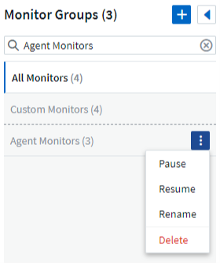

Dokumentationsänderungen beantragen
Dokumentationsänderungen beantragen In GitHub bearbeiten
In GitHub bearbeiten Leitfaden für Beitragende
Leitfaden für BeitragendeSystemmonitore
Beitragende
Cloud Insights umfasst eine Reihe von systemdefinierten Monitoren für Kennzahlen und Protokolle. Die Überwachungsschnittstelle enthält eine Reihe von Änderungen für die Aufnahme dieser Systemmonitore. Diese werden in diesem Abschnitt beschrieben.

|
Systemmonitore befinden sich standardmäßig im Status Paused. Bevor Sie den Monitor wieder aufnehmen können, müssen Sie sicherstellen, dass Advanced Counter Data Collection und Enable ONTAP EMS Log Collection im Data Collector aktiviert sind. Diese Optionen finden Sie im ONTAP Data Collector unter Erweiterte Konfiguration:
|
Gruppen Überwachen
Durch Gruppierung können Sie zugehörige Monitore anzeigen und verwalten. Sie können beispielsweise eine Monitorgruppe für den Speicher in Ihrer Umgebung einrichten oder überwachen, die für eine bestimmte Empfängerliste relevant ist.

Neben dem Gruppennamen wird die Anzahl der in einer Gruppe enthaltenen Monitore angezeigt.
|
|
Benutzerdefinierte Monitore können angehalten, fortgesetzt, gelöscht oder in eine andere Gruppe verschoben werden. Systemdefinierte Monitore können angehalten und fortgesetzt werden, können aber nicht gelöscht oder verschoben werden. |
Benutzerdefinierte Monitorgruppen
Um eine neue benutzerdefinierte Monitorgruppe zu erstellen, klicken Sie auf die Schaltfläche "+" Neue Monitorgruppe erstellen. Geben Sie einen Namen für die Gruppe ein und klicken Sie auf Gruppe erstellen. Eine leere Gruppe mit diesem Namen wird erstellt.
Um Monitore zur Gruppe hinzuzufügen, gehen Sie zur Gruppe Alle Monitore (empfohlen) und führen Sie einen der folgenden Schritte aus:
-
Um einen einzelnen Monitor hinzuzufügen, klicken Sie auf das Menü rechts neben dem Monitor und wählen Sie zu Gruppe hinzufügen. Wählen Sie die Gruppe aus, der der Monitor hinzugefügt werden soll.
-
Klicken Sie auf den Monitornamen, um die Bearbeitungsansicht des Monitors zu öffnen, und wählen Sie im Abschnitt „_mit einer Monitorgruppe verknüpfen“ eine Gruppe aus.

Entfernen Sie Monitore, indem Sie auf eine Gruppe klicken und im Menü aus Gruppe entfernen auswählen. Sie können keine Monitore aus der Gruppe „Alle Monitore“ oder „ Benutzerdefinierte Monitore_“ entfernen. Um einen Monitor aus diesen Gruppen zu löschen, müssen Sie den Monitor selbst löschen.
|
|
Durch Entfernen eines Monitors aus einer Gruppe wird der Monitor nicht aus Cloud Insights gelöscht. Um einen Monitor vollständig zu entfernen, wählen Sie den Monitor aus, und klicken Sie auf Löschen. Dadurch wird sie auch aus der Gruppe entfernt, zu der sie gehört hat und für keinen Benutzer mehr verfügbar ist. |
Sie können einen Monitor auf dieselbe Weise in eine andere Gruppe verschieben und dabei zu Gruppe verschieben.
Um alle Monitore in einer Gruppe gleichzeitig anzuhalten oder wieder aufzunehmen, wählen Sie das Menü für die Gruppe aus und klicken Sie auf Pause oder Fortsetzen.
Verwenden Sie dasselbe Menü, um eine Gruppe umzubenennen oder zu löschen. Durch das Löschen einer Gruppe werden die Monitore nicht aus Cloud Insights gelöscht; sie sind weiterhin in Alle Monitore verfügbar.

Monitorbeschreibungen
Systemdefinierte Monitore bestehen aus vordefinierten Metriken und Bedingungen sowie aus Standardbeschreibungen und Korrekturmaßnahmen, die nicht geändert werden können. Sie können die BenachrichtigungsEmpfängerliste für systemdefinierte Monitore ändern. Um die Metriken, Bedingungen, Beschreibungen und Korrekturmaßnahmen anzuzeigen oder die Empfängerliste zu ändern, öffnen Sie eine systemdefinierte Monitorgruppe, und klicken Sie in der Liste auf den Monitornamen.
Systemdefinierte Monitorgruppen können nicht geändert oder entfernt werden.
Die folgenden systemdefinierten Monitore sind in den genannten Gruppen verfügbar.
-
Die ONTAP-Infrastruktur umfasst Monitore für Probleme mit der Infrastruktur in ONTAP-Clustern.
-
Beispiele für ONTAP-Workloads enthält Monitore für Workload-Probleme.
-
Monitore in beiden Gruppen sind standardmäßig in den Status Paused eingestellt.
Nachfolgend sind die derzeit in Cloud Insights enthaltenen Systemmonitore aufgeführt:
Metrische Monitore
Monitorname |
Schweregrad |
Beschreibung |
Korrekturmaßnahme |
Hohe Auslastung Des Fibre Channel Ports |
KRITISCH |
Über die Fibre Channel Protocol-Ports wird der SAN-Datenverkehr zwischen dem Host-System des Kunden und den ONTAP-LUNs empfangen und übertragen. Wenn die Port-Auslastung hoch ist, führt dies zu einem Engpass, der letztlich die Performance von sensiblen Fibre Channel Protocol-Workloads beeinträchtigt. Eine Warnmeldung gibt an, dass geplante Maßnahmen ergriffen werden sollten, um den Netzwerkverkehr auszugleichen. Eine kritische Warnung zeigt an, dass eine Serviceunterbrechung bevorsteht und Notmaßnahmen ergriffen werden sollten, um den Netzwerkverkehr auszugleichen, um die Servicekontinuität zu gewährleisten. |
Zur Minimierung von Serviceunterbrechungen sind sofortige Maßnahmen erforderlich, wenn kritische Grenzwerte nicht eingehalten werden: 1. Verschieben von Workloads auf einen anderen weniger ausgelasteten FCP-Port 2 Begrenzen Sie den Datenverkehr bestimmter LUNs auf wichtige Aufgaben nur über QoS-Richtlinien in der ONTAP- oder Host-seitige Konfiguration, um die Auslastung der FCP-Ports… zu erleichtern Bei Überschreitung der Warnschwelle sollten Sie die folgenden Maßnahmen baldmöglichst ergreifen: 1. Ziehen Sie in Erwägung, mehr FCP Ports zu konfigurieren, um den Datenverkehr zu behandeln, damit die Port-Auslastung auf mehr Ports verteilt wird 2. Verschieben Sie Workloads auf einen anderen weniger ausgelasteten FCP-Port 3. Begrenzen Sie den Datenverkehr bestimmter LUNs auf wichtige Funktionen nur über QoS-Richtlinien in der ONTAP- oder Host-seitige Konfiguration, um die Auslastung der FCP-Ports zu erleichtern |
Hohe Lun-Latenz |
KRITISCH |
LUNs sind Objekte, die den I/O-Verkehr bedienen. Dabei werden häufig Performance-kritische Applikationen wie Datenbanken verwendet. Hohe LUN-Latenzen bedeuten, dass die Applikationen selbst unter Umständen leiden und ihre Aufgaben nicht ausführen können. Eine Warnmeldung gibt an, dass geplante Maßnahmen ergriffen werden sollten, um die LUN auf den entsprechenden Node oder Aggregat zu verschieben. Ein kritischer Alarm zeigt an, dass eine Serviceunterbrechung bevorsteht und Notfallmaßnahmen ergriffen werden sollten, um die Servicekontinuität sicherzustellen. Die folgenden Latenzzeiten sind auf Grundlage des Medientyps zu erwarten – SSD bis zu 1-2 Millisekunden, SAS bis zu 8-10 Millisekunden und SATA-HDD 17-20 Millisekunden |
Zur Minimierung von Serviceunterbrechungen sind sofortige Maßnahmen erforderlich, wenn kritische Grenzwerte nicht eingehalten werden: 1. Wenn der LUN oder dessen Volume eine QoS-Richtlinie zugeordnet ist, sollten Sie seine Schwellenwertgrenzen bewerten und überprüfen, ob der LUN-Workload gedrosselt wird… Bei Überschreitung der Warnschwelle sollten Sie die folgenden Maßnahmen baldmöglichst ergreifen: 1. Wenn zudem ein Aggregat eine hohe Auslastung aufweist, verschieben Sie die LUN zu einem anderen Aggregat 2. Wenn zudem ein Node hohe Auslastung besitzt, verschieben Sie das Volume auf einen anderen Node oder verringern Sie den Gesamtarbeitslastaufwand des Node 3. Wenn der LUN oder dessen Volume eine QoS-Richtlinie zugeordnet ist, sollten Sie seine Schwellenwertgrenzen bewerten und überprüfen, ob der LUN-Workload gedrosselt wird |
Hohe Auslastung Des Netzwerkports |
KRITISCH |
Netzwerkports werden verwendet, um den Protokollverkehr zwischen den Host-Systemen des Kunden und den ONTAP Volumes zu empfangen und zu übertragen. Wenn die Port-Auslastung hoch ist, wird es zu einem Engpass, der letztlich die Performance von NFS-, CIFS- und iSCSI-Workloads beeinträchtigt. Eine Warnmeldung gibt an, dass geplante Maßnahmen ergriffen werden sollten, um den Netzwerkverkehr auszugleichen. Eine kritische Warnung zeigt an, dass eine Serviceunterbrechung bevorsteht und Notmaßnahmen ergriffen werden sollten, um den Netzwerkverkehr auszugleichen, um die Servicekontinuität zu gewährleisten. |
Zur Minimierung von Serviceunterbrechungen sind sofortige Maßnahmen erforderlich, wenn kritische Grenzwerte nicht eingehalten werden: 1. Begrenzen Sie den Datenverkehr bestimmter Volumes auf wichtige Funktionen, und zwar nur über QoS-Richtlinien in ONTAP oder durch Host-seitige Analysen, um die Auslastung der Netzwerkports zu erleichtern 2. Konfigurieren Sie ein oder mehrere Volumes, um einen anderen weniger ausgelasteten Netzwerkport zu verwenden… Bei Überschreitung der Warnschwelle sollten Sie die folgenden Maßnahmen baldmöglichst ergreifen: 1. Ziehen Sie in Erwägung, mehr Netzwerkports zu konfigurieren, um den Datenverkehr zu behandeln, damit die Port-Auslastung auf mehrere Ports verteilt wird 2. Konfigurieren Sie ein oder mehrere Volumes, um einen anderen weniger ausgelasteten Netzwerkport zu verwenden |
Hohe NVMe Namespace-Latenz |
KRITISCH |
NVMe Namesaces sind Objekte, die den I/O-Verkehr bedienen, der häufig von Performance-abhängigen Applikationen wie Datenbanken verursacht wird. Hohe NVMe Namesaces Latenzen bedeuten, dass die Applikationen selbst möglicherweise darunter leiden und ihre Aufgaben nicht ausführen können. Eine Warnmeldung gibt an, dass geplante Maßnahmen ergriffen werden sollten, um die LUN auf den entsprechenden Node oder Aggregat zu verschieben. Ein kritischer Alarm zeigt an, dass eine Serviceunterbrechung bevorsteht und Notfallmaßnahmen ergriffen werden sollten, um die Servicekontinuität sicherzustellen. |
Zur Minimierung von Serviceunterbrechungen sind sofortige Maßnahmen erforderlich, wenn kritische Grenzwerte nicht eingehalten werden: 1. Wenn ihnen der NVMe Namespace oder dessen Volume eine QoS-Richtlinie zugewiesen ist, sollten sie dessen Grenzschwellenwerte bewerten, falls der NVMe Namespace-Workload gedrosselt wird… Bei Überschreitung der Warnschwelle sollten Sie die folgenden Maßnahmen baldmöglichst ergreifen: 1. Wenn zudem ein Aggregat eine hohe Auslastung aufweist, verschieben Sie die LUN zu einem anderen Aggregat 2. Wenn zudem ein Node hohe Auslastung besitzt, verschieben Sie das Volume auf einen anderen Node oder verringern Sie den Gesamtarbeitslastaufwand des Node 3. Wenn ihnen der NVMe Namespace oder das zugehörige Volume eine QoS-Richtlinie zugewiesen ist, sollten sie dessen Grenzschwellenwerte bewerten, falls der NVMe Namespace Workload gedrosselt wird |
Harte Grenze der qtree-Kapazität |
KRITISCH |
Ein qtree ist ein logisch definiertes File-System, das als spezielles Unterverzeichnis des Root-Verzeichnisses innerhalb eines Volumes vorhanden sein kann. Jeder qtree verfügt über eine in KB gemessene Speicherplatzquote, die dazu dient, Daten zu speichern, um das Wachstum der Benutzerdaten im Volumen zu kontrollieren und ihre Gesamtkapazität nicht zu überschreiten. Ein qtree behält eine weiche Storage-Kapazitätskontingente, um den Benutzer proaktiv benachrichtigen zu können, bevor er die Obergrenze der Kapazitätsgrenze im qtree erreicht und Daten nicht mehr speichern kann. Durch das Monitoring der in einem qtree gespeicherten Datenmenge wird sichergestellt, dass der Benutzer einen unterbrechungsfreien Datenservice erhält. |
Zur Minimierung von Serviceunterbrechungen sind sofortige Maßnahmen erforderlich, wenn kritische Grenzwerte nicht eingehalten werden: 1. Ziehen Sie die Erhöhung der Baumraumquote in Betracht, um dem Wachstum gerecht zu werden 2. Sie sollten den Benutzer anweisen, unerwünschte Daten in der Struktur zu löschen, die nicht mehr benötigt werden, um Speicherplatz freizugeben |
Die qtree-Kapazität ist voll |
KRITISCH |
Ein qtree ist ein logisch definiertes File-System, das als spezielles Unterverzeichnis des Root-Verzeichnisses innerhalb eines Volumes vorhanden sein kann. Jeder qtree verfügt über ein Standard-Speicherplatzkontingent oder eine durch eine Kontingentrichtlinie definierte Quote, um die Menge der im Baum innerhalb der Volume-Kapazität gespeicherten Daten zu begrenzen. Eine Warnmeldung gibt an, dass geplante Maßnahmen zur Vergrößerung des Speicherplatzes ergriffen werden sollten. Eine kritische Warnmeldung zeigt an, dass eine Serviceunterbrechung bevorsteht und Notmaßnahmen ergriffen werden sollten, um Speicherplatz freizugeben, um die Servicekontinuität sicherzustellen. |
Zur Minimierung von Serviceunterbrechungen sind sofortige Maßnahmen erforderlich, wenn kritische Grenzwerte nicht eingehalten werden: 1. Man denke daran, den Platzbedarf des qtree zu erhöhen, um dem Wachstum gerecht zu werden 2. Denken Sie daran, Daten zu löschen, die nicht mehr benötigt werden, um Speicherplatz freizugeben… Bei Überschreitung der Warnschwelle sollten Sie die folgenden Maßnahmen baldmöglichst ergreifen: 1. Man denke daran, den Platzbedarf des qtree zu erhöhen, um dem Wachstum gerecht zu werden 2. Gehen Sie beispielsweise davon aus, Daten zu löschen, die nicht mehr benötigt werden, um Speicherplatz freizugeben |
Qtree Kapazitätsgrenze |
WARNUNG |
Ein qtree ist ein logisch definiertes File-System, das als spezielles Unterverzeichnis des Root-Verzeichnisses innerhalb eines Volumes vorhanden sein kann. Jeder qtree verfügt über eine in KB gemessene Speicherplatzquote, die dazu dient, Daten zu speichern, um das Wachstum der Benutzerdaten im Volumen zu kontrollieren und ihre Gesamtkapazität nicht zu überschreiten. Ein qtree behält eine weiche Storage-Kapazitätskontingente, um den Benutzer proaktiv benachrichtigen zu können, bevor er die Obergrenze der Kapazitätsgrenze im qtree erreicht und Daten nicht mehr speichern kann. Durch das Monitoring der in einem qtree gespeicherten Datenmenge wird sichergestellt, dass der Benutzer einen unterbrechungsfreien Datenservice erhält. |
Bei Überschreitung der Warnschwelle sollten Sie die folgenden Maßnahmen baldmöglichst ergreifen: 1. Ziehen Sie die Erhöhung der Baumraumquote in Betracht, um dem Wachstum gerecht zu werden 2. Sie sollten den Benutzer anweisen, unerwünschte Daten in der Struktur zu löschen, die nicht mehr benötigt werden, um Speicherplatz freizugeben |
Harte Grenze für qtree Dateien |
KRITISCH |
Ein qtree ist ein logisch definiertes File-System, das als spezielles Unterverzeichnis des Root-Verzeichnisses innerhalb eines Volumes vorhanden sein kann. Jeder qtree verfügt über ein Kontingent an der Anzahl der Dateien, die er enthalten kann, um eine einfach zu verwaltende Dateisystemgröße innerhalb des Volumes beizubehalten. Ein qtree behält eine harte Dateinummer-Quote, über die neue Dateien im Baum verweigert werden. Durch das Monitoring der Dateianzahl innerhalb eines qtree wird sichergestellt, dass der Benutzer einen unterbrechungsfreien Datenservice erhält. |
Zur Minimierung von Serviceunterbrechungen sind sofortige Maßnahmen erforderlich, wenn kritische Grenzwerte nicht eingehalten werden: 1. Ziehen Sie die Erhöhung des Dateianzahl für den qtree 2 in Betracht. Dateien löschen, die aus dem qtree-Dateisystem nicht mehr verwendet werden. |
Qtree Files Soft Limit |
WARNUNG |
Ein qtree ist ein logisch definiertes File-System, das als spezielles Unterverzeichnis des Root-Verzeichnisses innerhalb eines Volumes vorhanden sein kann. Jeder qtree verfügt über ein Kontingent an der Anzahl der Dateien, die er enthalten kann, um eine einfach zu verwaltende Dateisystemgröße innerhalb des Volumes beizubehalten. Ein qtree behält eine weiche Dateinummer-Quote, um den Benutzer proaktiv benachrichtigen zu können, bevor er die Grenze der Dateien im qtree erreicht und keine zusätzlichen Dateien speichern kann. Durch das Monitoring der Dateianzahl innerhalb eines qtree wird sichergestellt, dass der Benutzer einen unterbrechungsfreien Datenservice erhält. |
Bei Überschreitung der Warnschwelle sollten Sie die folgenden Maßnahmen baldmöglichst ergreifen: 1. Ziehen Sie die Erhöhung des Dateianzahl für den qtree 2 in Betracht. Dateien löschen, die aus dem qtree-Dateisystem nicht mehr verwendet werden |
Der Speicherplatz der Snapshot-Reserve ist voll |
KRITISCH |
Die Storage-Kapazität eines Volumes ist erforderlich, um Applikations- und Kundendaten zu speichern. Ein Teil dieses Speicherplatzes, der als reservierter Snapshot-Speicherplatz bezeichnet wird, wird zum Speichern von Snapshots verwendet, mit denen Daten lokal gesichert werden können. Je mehr neue und aktualisierte Daten in dem ONTAP Volume gespeichert sind, desto mehr Snapshot-Kapazität wird benötigt und weniger Snapshot Storage-Kapazität wird für zukünftige neue oder aktualisierte Daten zur Verfügung stehen. Wenn die Snapshot-Datenkapazität innerhalb eines Volumes den gesamten Snapshot-Reserveplatz erreicht, kann dies dazu führen, dass der Kunde nicht in der Lage ist, neue Snapshot-Daten zu speichern und den Schutz der Daten im Volume zu verringern. Durch das Monitoring der verwendeten Snapshot-Kapazität des Volumes wird die Kontinuität der Datendienste gewährleistet. |
Zur Minimierung von Serviceunterbrechungen sind sofortige Maßnahmen erforderlich, wenn kritische Grenzwerte nicht eingehalten werden: 1. Erwägen Sie die Konfiguration von Snapshots, um Platz im Volumen zu nutzen, wenn die Snapshot-Reserve voll ist 2. Ziehen Sie in Erwägung, einige ältere Snapshots zu löschen, die möglicherweise nicht mehr benötigt werden, um Speicherplatz freizugeben… Bei Überschreitung der Warnschwelle sollten Sie die folgenden Maßnahmen baldmöglichst ergreifen: 1. Denken Sie daran, den Platz der Snapshot-Reserve innerhalb des Volumes zu erhöhen, um dem Wachstum gerecht zu werden 2. Es empfiehlt sich die Konfiguration von Snapshots, um den Platz im Volume zu nutzen, wenn die Snapshot-Reserve voll ist |
Begrenzung Der Storage-Kapazität |
KRITISCH |
Wenn sich ein Storage-Pool (Aggregat) füllt, werden I/O-Vorgänge verlangsamt und schließlich werden Ausfälle verursacht. Eine Warnmeldung gibt an, dass geplante Maßnahmen zur Wiederherstellung des minimalen freien Speicherplatzes in Kürze getroffen werden sollten. Eine kritische Warnmeldung zeigt an, dass eine Serviceunterbrechung bevorsteht und Notmaßnahmen ergriffen werden sollten, um Speicherplatz freizugeben, um die Servicekontinuität sicherzustellen. |
Zur Minimierung von Serviceunterbrechungen sind sofortige Maßnahmen erforderlich, wenn kritische Grenzwerte nicht eingehalten werden: 1. Snapshots auf nicht kritischen Volumes löschen 2. Löschen Sie Volumes oder LUNs, die nicht wichtige Workloads sind und aus externen Storage-Kopien wiederhergestellt werden können… Bei Überschreitung der Warnschwelle sollten Sie die folgenden Maßnahmen baldmöglichst ergreifen: 1. Verschieben Sie ein oder mehrere Volumes an einen anderen Speicherort 2. Zusätzliche Storage-Kapazität hinzufügen 3. Ändern Sie die Einstellungen für die Storage-Effizienz oder verschieben Sie inaktive Daten in den Cloud-Storage |
Limit Der Storage-Performance |
KRITISCH |
Wenn ein Storage-System die Performance-Grenzen erreicht, werden Betriebsabläufe verlangsamt, die Latenz steigt und Workloads und Applikationen können ausfallen. ONTAP bewertet die Storage-Pool-Auslastung aufgrund von Workloads und schätzt, wie viel Prozent der Performance genutzt wurde. Eine Warnmeldung gibt an, dass geplante Maßnahmen ergriffen werden sollten, um die Auslastung des Storage Pools auf die Entlastung zu reduzieren, da möglicherweise nicht die ausreichende Performance des Storage Pools zur Verfügung steht, um Spitzenlasten zu erzielen. Eine wichtige Warnmeldung gibt an, dass eine bevorstehende Performance-Warnmeldung vorliegt und Notmaßnahmen zur Verringerung der Storage Pool-Last ergriffen werden sollten, um die Servicekontinuität sicherzustellen. |
Zur Minimierung von Serviceunterbrechungen sind sofortige Maßnahmen erforderlich, wenn kritische Grenzwerte nicht eingehalten werden: 1. Unterbrechen Sie geplante Aufgaben wie Snapshots oder SnapMirror Replikation 2. Nicht kritische Workloads im Leerlauf… Bei Überschreitung der Warnschwelle sollten Sie die folgenden Maßnahmen baldmöglichst ergreifen: 1. Verschieben Sie eine oder mehrere Workloads an einen anderen Storage-Standort 2. Hinzufügen von weiteren Storage-Nodes (AFF) oder Festplatten-Shelfs (FAS) und Neuverteilung von Workloads 3 Änderung der Workload-Merkmale (Blockgröße, Applikations-Caching usw.) |
Harte Grenze Der Kapazität Der Benutzerkontingente |
KRITISCH |
ONTAP erkennen die Benutzer von Unix- oder Windows-Systemen, die über die Rechte zum Zugriff auf Volumes, Dateien oder Verzeichnisse innerhalb eines Volumes verfügen. ONTAP ermöglicht Kunden die Konfiguration der Storage-Kapazität für ihre Benutzer oder Benutzergruppen ihrer Linux- oder Windows-Systeme. Die Benutzer- oder Gruppenrichtlinien-Quota beschränken die Menge an Speicherplatz, den der Benutzer für seine eigenen Daten nutzen kann. Ein hartes Limit dieser Quote ermöglicht eine Benachrichtigung des Benutzers, wenn die Menge der innerhalb des Volumes genutzten Kapazität recht ist, bevor die Gesamtkapazitätsquote erreicht wird. Durch die Überwachung der Datenmenge, die innerhalb eines Benutzer- oder Gruppenkontingents gespeichert ist, wird sichergestellt, dass der Benutzer einen ununterbrochenen Datendienst erhält. |
Zur Minimierung von Serviceunterbrechungen sind sofortige Maßnahmen erforderlich, wenn kritische Grenzwerte nicht eingehalten werden: 1. Denken Sie daran, den Platz der Benutzer- oder Gruppenquote zu erhöhen, um dem Wachstum gerecht zu werden 2. Ziehen Sie in Betracht, den Benutzer oder die Gruppe anzuweisen, Daten zu löschen, die nicht mehr benötigt werden, um Speicherplatz freizugeben. |
Soft-Limit Für Benutzerkontingenenkapazität |
WARNUNG |
ONTAP erkennen die Benutzer von Unix- oder Windows-Systemen, die über die Rechte zum Zugriff auf Volumes, Dateien oder Verzeichnisse innerhalb eines Volumes verfügen. ONTAP ermöglicht Kunden die Konfiguration der Storage-Kapazität für ihre Benutzer oder Benutzergruppen ihrer Linux- oder Windows-Systeme. Die Benutzer- oder Gruppenrichtlinien-Quota beschränken die Menge an Speicherplatz, den der Benutzer für seine eigenen Daten nutzen kann. Ein weiches Limit dieser Quote ermöglicht eine proaktive Benachrichtigung des Benutzers, wenn die innerhalb des Volume genutzte Kapazität die gesamte Kapazitätsquote erreicht. Durch die Überwachung der Datenmenge, die innerhalb eines Benutzer- oder Gruppenkontingents gespeichert ist, wird sichergestellt, dass der Benutzer einen ununterbrochenen Datendienst erhält. |
Bei Überschreitung der Warnschwelle sollten Sie die folgenden Maßnahmen baldmöglichst ergreifen: 1. Denken Sie daran, den Platz der Benutzer- oder Gruppenquote zu erhöhen, um dem Wachstum gerecht zu werden 2. Gehen Sie beispielsweise davon aus, Daten zu löschen, die nicht mehr benötigt werden, um Speicherplatz freizugeben. |
Volume-Kapazität ist voll |
KRITISCH |
Die Storage-Kapazität eines Volumes ist erforderlich, um Applikations- und Kundendaten zu speichern. Je mehr Daten im ONTAP-Volume gespeichert werden, desto geringer ist die Storage-Verfügbarkeit für künftige Daten. Wenn die Datenspeicherkapazität innerhalb eines Volumes die gesamte Storage-Kapazität erreicht, kann der Kunde aufgrund des Fehlens der entsprechenden Storage-Kapazität möglicherweise nicht in der Lage sein, Daten zu speichern. Durch das Monitoring der verwendeten Storage-Kapazität wird die Kontinuität der Datendienste gewährleistet. |
Zur Minimierung von Serviceunterbrechungen sind sofortige Maßnahmen erforderlich, wenn kritische Grenzwerte nicht eingehalten werden: 1. Es sollte unbedingt der Speicherplatz des Volumes erhöht werden, um dem Wachstum gerecht zu werden 2. Denken Sie daran, Daten zu löschen, die nicht mehr benötigt werden, um Speicherplatz freizugeben… Bei Überschreitung der Warnschwelle sollten Sie die folgenden Maßnahmen baldmöglichst ergreifen: 1. Denken Sie daran, den Platzbedarf des Volumes zu erhöhen, um dem Wachstum gerecht zu werden |
Hohe Volume-Latenz |
KRITISCH |
Volumes sind Objekte, die den I/O-Verkehr bedienen. Dabei werden häufig Performance-kritische Applikationen wie DevOps-Applikationen, Home Directorys und Datenbanken verwendet. Latenzen bei hohen Mengen bedeuten, dass die Applikationen selbst unter Umständen darunter leiden und ihre Aufgaben nicht ausführen können. Das Monitoring von Volume-Latenzzeiten ist von entscheidender Bedeutung, um eine applikationskonsistente Performance zu gewährleisten. Die folgenden Latenzzeiten sind auf Grundlage des Medientyps zu erwarten – SSD bis zu 1-2 Millisekunden, SAS bis zu 8-10 Millisekunden und SATA-HDD 17-20 Millisekunden. |
Zur Minimierung von Serviceunterbrechungen sind sofortige Maßnahmen erforderlich, wenn kritische Grenzwerte nicht eingehalten werden: 1. Wenn dem Volume eine QoS-Richtlinie zugewiesen ist, bewerten Sie dessen Grenzwerte für den Fall, dass der Volume-Workload gedrosselt wird… Bei Überschreitung der Warnschwelle sollten Sie die folgenden Maßnahmen baldmöglichst ergreifen: 1. Wenn zudem ein Aggregat eine hohe Auslastung erzielt, verschieben Sie das Volume zu einem anderen Aggregat. 2. Wenn dem Volume eine QoS-Richtlinie zugewiesen ist, bewerten sie ihre Grenzwerte für den Fall, dass sie den Volume-Workload dazu bringen, gedrosselt zu werden. 3. Wenn auch der Node eine hohe Auslastung verzeichnet, verschieben Sie das Volume auf einen anderen Node oder reduzieren Sie den Gesamtarbeitsaufwand des Node |
Volume-Inodes-Limit |
KRITISCH |
Volumes, in denen Dateien gespeichert werden, verwenden Index-Nodes (Inode) zum Speichern von Dateimetadaten. Wenn ein Volumen seine Inode-Zuordnung erschöpft, können keine Dateien mehr hinzugefügt werden. Eine Warnmeldung gibt an, dass geplante Maßnahmen ergriffen werden sollten, um die Anzahl der verfügbaren Inodes zu erhöhen. Eine kritische Warnung zeigt an, dass die Erschöpfung des Dateilimits unmittelbar bevorsteht und Notmaßnahmen ergriffen werden müssen, um Inodes freizusetzen, um die Kontinuität des Dienstes sicherzustellen. |
Zur Minimierung von Serviceunterbrechungen sind sofortige Maßnahmen erforderlich, wenn kritische Grenzwerte nicht eingehalten werden: 1. Ziehen Sie in Betracht, den Inodes-Wert für das Volumen zu erhöhen. Wenn der Wert für Inodes bereits auf dem Maximum liegt, erüberlegen Sie sich, das Volume in zwei oder mehr Volumes aufzuteilen, da das Dateisystem über die maximale Größe 2 gewachsen ist. Ziehen Sie den Einsatz von FlexGroup in Betracht, da es hilft, große Filesysteme zu bewältigen… Bei Überschreitung der Warnschwelle sollten Sie die folgenden Maßnahmen baldmöglichst ergreifen: 1. Ziehen Sie in Betracht, den Inodes-Wert für das Volumen zu erhöhen. Wenn der Wert für Inodes bereits auf dem Maximum liegt, erüberlegen Sie sich, das Volume in zwei oder mehr Volumes aufzuteilen, da das Dateisystem über die maximale Größe 2 gewachsen ist. Ziehen Sie den Einsatz von FlexGroup in Betracht, da es Unterstützung bei großen File-Systemen bietet |
Monitorname |
Severity |
Beschreibung Des Monitors |
Korrekturmaßnahme |
Hohe Node-Latenz |
WARNUNG/KRITISCH |
Die Node-Latenz hat die Werte erreicht, die möglicherweise die Performance der Applikationen auf dem Node beeinträchtigen könnten. Eine niedrigere Node-Latenz sorgt für eine konsistente Performance der Applikationen. Zu den erwarteten Latenzzeiten auf Grundlage des Medientyps zählen SSD bis zu 1-2 Millisekunden, SAS bis zu 8-10 Millisekunden und SATA-HDD 17-20 Millisekunden. |
Wenn kritische Schwellenwerte nicht eingehalten werden, sind sofortige Maßnahmen zur Minimierung von Serviceunterbrechungen zu ergreifen: 1. Unterbrechen Sie geplante Aufgaben, Snapshots oder SnapMirror Replikation 2. Weniger Bedarf an Workloads mit niedriger Priorität über QoS-Limits 3 Nichtaktivierung von nicht wichtigen Workloads Verachten Sie sofortige Maßnahmen bei Überschreitung eines Warnschwellenwerts: 1. Verschieben Sie eine oder mehrere Workloads an einen anderen Storage-Standort 2. Weniger Bedarf an Workloads mit niedriger Priorität über QoS-Limits 3 Hinzufügen von weiteren Storage-Nodes (AFF) oder Festplatten-Shelfs (FAS) und Neuverteilung von Workloads 4 Änderung der Workload-Merkmale (Blockgröße, Applikations-Caching usw.) |
Node-Performance-Limit |
WARNUNG/KRITISCH |
Die Performance-Auslastung der Nodes hat die Werte erreicht, in denen sie die Performance der I/O-Vorgänge und der vom Node unterstützten Applikationen beeinträchtigen könnten. Eine geringe Auslastung der Node-Performance stellt eine konsistente Performance der Applikationen sicher. |
Zur Minimierung von Serviceunterbrechungen bei Überschreitung kritischer Schwellwerte sind sofortige Maßnahmen zu ergreifen: 1. Unterbrechen Sie geplante Aufgaben, Snapshots oder SnapMirror Replikation 2. Weniger Bedarf an Workloads mit niedriger Priorität über QoS-Limits 3 Bei der Nichtaktivierung von nicht wichtigen Workloads sollten folgende Maßnahmen ergriffen werden, wenn Warnschwellenwert überschritten wird: 1. Verschieben Sie eine oder mehrere Workloads an einen anderen Storage-Standort 2. Weniger Bedarf an Workloads mit niedriger Priorität über QoS-Limits 3 Hinzufügen von weiteren Storage-Nodes (AFF) oder Festplatten-Shelfs (FAS) und Neuverteilung von Workloads 4 Änderung der Workload-Merkmale (Blockgröße, Applikations-Caching usw.) |
Storage-VM hohe Latenz |
WARNUNG/KRITISCH |
Die Latenz von Storage-VM (SVM) hat die Werte erreicht, die sich auf die Performance der Applikationen auf der Storage-VM auswirken könnten. Eine geringere Storage-VM-Latenz sorgt für eine konsistente Performance der Applikationen. Zu den erwarteten Latenzzeiten auf Grundlage des Medientyps zählen SSD bis zu 1-2 Millisekunden, SAS bis zu 8-10 Millisekunden und SATA-HDD 17-20 Millisekunden. |
Falls der kritische Schwellenwert nicht erreicht wird, bewerten Sie sofort die Grenzwerte für Volumes der Storage-VM mit einer zugewiesenen QoS-Richtlinie. So überprüfen Sie, ob die Volume-Workloads gedrosselt werden, und berücksichtigen Sie folgende unmittelbare Maßnahmen, wenn der Warnschwellenwert nicht erreicht wird: 1. Wenn zudem ein Aggregat eine hohe Auslastung erzielt, verschieben Sie einige Volumes der Storage VM zu einem anderen Aggregat. 2. Bewerten Sie für Volumes der Storage-VM mit einer zugewiesenen QoS-Richtlinie die Schwellenwertgrenzen, wenn sie dazu führen, dass die Volume-Workloads gedrosselt werden 3. Falls der Node eine hohe Auslastung erzielt, verschieben Sie einige Volumes der Storage-VM auf einen anderen Node oder verringern Sie den Gesamtarbeitsbedarf des Node |
Harte Grenze Für Benutzer-Quota-Dateien |
KRITISCH |
Die Anzahl der innerhalb des Volumes erstellten Dateien hat das kritische Limit erreicht, und es können keine zusätzlichen Dateien erstellt werden. Durch die Überwachung der Anzahl der gespeicherten Dateien wird sichergestellt, dass der Benutzer einen ununterbrochenen Datendienst erhält. |
Sofortige Maßnahmen sind zur Minimierung von Service-Unterbrechungen nötig, wenn kritische Grenzwerte nicht eingehalten werden.…Ermöglichen Sie Maßnahmen: 1. Erhöhen Sie die Dateianzahl für den spezifischen Benutzer 2. Löschen Sie unerwünschte Dateien, um den Druck auf die Dateiquote für den spezifischen Benutzer zu verringern |
Soft Limit Für Benutzerkontingendateien |
WARNUNG |
Die Anzahl der innerhalb des Volumes erstellten Dateien hat den Grenzwert der Quote erreicht und befindet sich nahe dem kritischen Limit. Sie können keine zusätzlichen Dateien erstellen, wenn die Quote die kritische Grenze erreicht. Durch die Überwachung der Anzahl der von einem Benutzer gespeicherten Dateien wird sichergestellt, dass der Benutzer einen ununterbrochenen Datendienst erhält. |
Unmittelbare Maßnahmen sollten bei Überschreitung der Warnschwelle ergriffen werden: 1. Erhöhen Sie die Dateianzahl für das spezifische Benutzerkontingent 2. Löschen Sie unerwünschte Dateien, um den Druck auf die Dateiquote für den spezifischen Benutzer zu verringern |
Miss-Verhältnis Von Volume Cache |
WARNUNG/KRITISCH |
Das Miss-Verhältnis des Volume Cache ist der Prozentsatz von Leseanforderungen der Client-Applikationen, die von der Festplatte zurückgegeben werden, anstatt vom Cache zurückgegeben zu werden. Das bedeutet, dass das Volumen den eingestellten Schwellenwert erreicht hat. |
Wenn kritische Schwellenwerte nicht eingehalten werden, sind sofortige Maßnahmen zur Minimierung von Serviceunterbrechungen zu ergreifen: 1. Verschieben Sie einige Workloads vom Node des Volumes, um die I/O-Last zu reduzieren 2. Wenn Sie dies noch nicht auf dem Node des Volume getan haben, erhöhen Sie den WAFL Cache durch den Kauf und das Hinzufügen eines Flash Cache 3. Weniger Workloads mit niedriger Priorität auf demselben Node über QoS-Grenzen für sofortige Maßnahmen ergreifen, wenn ein Warnschwellenwert nicht erreicht wird: 1 Verschieben Sie einige Workloads vom Node des Volumes, um die I/O-Last zu reduzieren 2. Wenn Sie dies noch nicht auf dem Node des Volume getan haben, erhöhen Sie den WAFL Cache durch den Kauf und das Hinzufügen eines Flash Cache 3. Durch QoS-Limits sinken die Anforderungen von Workloads mit niedriger Priorität auf demselben Node 4. Änderung der Workload-Merkmale (Blockgröße, Applikations-Caching usw.) |
Überprovisionierungsquote Bei Volume Qtree |
WARNUNG/KRITISCH |
Bei der Überprovisionierung von Volume-qtree wird der Prozentsatz angegeben, bei dem ein Volume durch die qtree Kontingente überengagiert wird. Der festgelegte Schwellenwert für die qtree-Quote wird für den Volumen erreicht. Durch Monitoring der Überprovisionierung von Volume-qtree wird sichergestellt, dass der Benutzer einen unterbrechungsfreien Datenservice erhält. |
Wenn kritische Schwellenwerte nicht eingehalten werden, sind sofortige Maßnahmen zur Minimierung von Serviceunterbrechungen zu ergreifen: 1. Vergrößern Sie den Speicherplatz des Volumens 2. Löschen Sie unerwünschte Daten, wenn ein Warnschwellenwert nicht erreicht wird. Dies empfiehlt sich, den Speicherplatz des Volume zu erhöhen. |
Protokollmonitore (nicht zeitaufgelöst)
Monitorname |
Schweregrad |
Beschreibung |
Korrekturmaßnahme |
Die AWS Zugangsdaten wurden nicht initialisiert |
INFO |
Dieses Ereignis tritt auf, wenn ein Modul versucht, über den Cloud-Anmeldedaten-Thread auf rollenbasierte IAM-Anmeldedaten (Identity and Access Management) von Amazon Web Services (AWS) zuzugreifen, bevor sie initialisiert werden. |
Warten Sie, bis der Cloud-Anmeldedaten-Thread sowie das System vollständig initialisiert wurden. |
Cloud-Tier Nicht Erreichbar |
KRITISCH |
Ein Storage-Node kann keine Verbindung mit der Objekt-Storage-API der Cloud-Ebene herstellen. Auf einige Daten kann nicht zugegriffen werden. |
Wenn Sie Produkte vor Ort verwenden, führen Sie die folgenden Korrekturmaßnahmen durch: …Überprüfen Sie mit dem Befehl „Network Interface show“, ob Ihre Intercluster-LIF online und funktionsfähig ist.…Überprüfen Sie die Netzwerkverbindung zum Objektspeicher-Server mithilfe des Befehls „ping“ über das Intercluster LIF des Ziel-Knotens.…Stellen Sie sicher, dass Folgendes vorliegt:…die Konfiguration Ihres Objektspeichers hat sich nicht geändert.…die Login- und Konnektivitätsinformationen sind Gültig weiterhin.…Wenden Sie sich an den technischen Support von NetApp, wenn das Problem weiterhin besteht. Wenn Sie Cloud Volumes ONTAP verwenden, führen Sie die folgenden Korrekturmaßnahmen durch: …Stellen Sie sicher, dass sich die Konfiguration Ihres Objektspeichers nicht geändert hat.… Stellen Sie sicher, dass die Anmeldeinformationen und Konnektivitätsinformationen weiterhin gültig sind.…wenden Sie sich an den technischen Support von NetApp, wenn das Problem weiterhin besteht. |
Disk außer Service |
INFO |
Dieses Ereignis tritt auf, wenn eine Festplatte aus dem Dienst entfernt wird, weil sie als fehlgeschlagen markiert, desinfiziert oder das Maintenance Center aufgerufen wurde. |
Keine. |
FlexGroup Konstituierend voll |
KRITISCH |
Ein Teil eines FlexGroup Volume ist voll, was zu einer potenziellen Serviceunterbrechung führen kann. Sie können weiterhin Dateien auf dem FlexGroup Volume erstellen oder erweitern. Allerdings kann keine der auf der Komponente gespeicherten Dateien geändert werden. Folglich werden möglicherweise zufällige Fehler angezeigt, wenn Sie versuchen, Schreibvorgänge auf dem FlexGroup Volume durchzuführen. |
Es wird empfohlen, dass Sie dem FlexGroup-Volume Kapazität hinzufügen, indem Sie den Befehl „Volume modify -files +X“ verwenden.…Alternativ können Sie auch Dateien vom FlexGroup-Volume löschen. Allerdings ist es schwierig zu bestimmen, welche Akten auf dem Konstituierenden gelandet sind. |
FlexGroup Konstituierend Fast Voll |
WARNUNG |
Ein Teil eines FlexGroup Volume ist beinahe nicht mehr genügend Speicherplatz, was zu einer potenziellen Serviceunterbrechung führen kann. Dateien können erstellt und erweitert werden. Wenn jedoch der Speicherplatz für die Komponente knapp ist, können Sie die Dateien auf der Komponente möglicherweise nicht anfügen oder ändern. |
Es wird empfohlen, dass Sie dem FlexGroup-Volume Kapazität hinzufügen, indem Sie den Befehl „Volume modify -files +X“ verwenden.…Alternativ können Sie auch Dateien vom FlexGroup-Volume löschen. Allerdings ist es schwierig zu bestimmen, welche Akten auf dem Konstituierenden gelandet sind. |
FlexGroup konstituierend fast aus Inodes |
WARNUNG |
Ein Teil eines FlexGroup Volume befindet sich nahezu außerhalb von Inodes, was zu einer potenziellen Serviceunterbrechung führen kann. Die Komponente erhält weniger Anfragen zur Erstellung als durchschnittlich. Dadurch kann sich unter Umständen die gesamte Performance des FlexGroup Volume auswirken, da die Anforderungen an Komponenten mit mehr Inodes weitergeleitet werden. |
Es wird empfohlen, dass Sie dem FlexGroup-Volume Kapazität hinzufügen, indem Sie den Befehl „Volume modify -files +X“ verwenden.…Alternativ können Sie auch Dateien vom FlexGroup-Volume löschen. Allerdings ist es schwierig zu bestimmen, welche Akten auf dem Konstituierenden gelandet sind. |
FlexGroup konstituierend aus Inodes |
KRITISCH |
Bei einem FlexGroup Volume sind nicht mehr Inodes vorhanden, was zu einer potenziellen Serviceunterbrechung führen kann. Sie können keine neuen Dateien auf dieser Komponente erstellen. Dies könnte zu einer insgesamt unausgeglichenen Verteilung von Inhalten über das FlexGroup-Volume führen. |
Es wird empfohlen, dass Sie dem FlexGroup-Volume Kapazität hinzufügen, indem Sie den Befehl „Volume modify -files +X“ verwenden.…Alternativ können Sie auch Dateien vom FlexGroup-Volume löschen. Allerdings ist es schwierig zu bestimmen, welche Akten auf dem Konstituierenden gelandet sind. |
LUN Offline |
INFO |
Dieses Ereignis tritt auf, wenn eine LUN manuell in den Offline-Modus versetzt wird. |
Versetzen Sie die LUN wieder in den Online-Modus. |
Hauptlüfter Fehlgeschlagen |
WARNUNG |
Mindestens ein Lüfter der Haupteinheit ist ausgefallen. Das System bleibt in Betrieb.…Wenn der Zustand jedoch zu lange andauert, kann die Übertemperatur ein automatisches Herunterfahren auslösen. |
Setzen Sie die fehlerhaften Lüfter neu ein. Wenn der Fehler weiterhin besteht, ersetzen Sie ihn. |
Hauptlüfter im Warnstatus |
INFO |
Dieses Ereignis tritt auf, wenn sich ein oder mehrere Hauptlüfter im Warnstatus befinden. |
Ersetzen Sie die angezeigten Lüfter, um eine Überhitzung zu vermeiden. |
NVRAM-Akku schwach |
WARNUNG |
Die Kapazität der NVRAM-Batterie ist kritisch niedrig. Es kann zu einem potenziellen Datenverlust kommen, wenn der Akku knapp wird.…das System generiert und sendet eine AutoSupport- oder „Call Home“-Meldung an den technischen Support von NetApp und die konfigurierten Ziele, sofern sie so konfiguriert sind. Die erfolgreiche Bereitstellung einer AutoSupport-Botschaft verbessert die Problembestimmung und -Lösung erheblich. |
Führen Sie folgende Korrekturmaßnahmen durch:…Anzeigen des aktuellen Status, der Kapazität und des Ladezustands der Batterie mit dem Befehl „System Node Environment Sensors show“.…Wenn die Batterie kürzlich ausgetauscht wurde oder das System längere Zeit nicht betriebsbereit war, Überwachen Sie die Batterie, um zu überprüfen, ob sie ordnungsgemäß geladen wird.…wenden Sie sich an den technischen Support von NetApp, wenn die Akkulaufzeit unter den kritischen Wert nachlässt und das Speichersystem automatisch heruntergefahren wird. |
Der Service-Prozessor Ist Nicht Konfiguriert |
WARNUNG |
Dieses Event findet wöchentlich statt, um Sie daran zu erinnern, den Service-Prozessor (SP) zu konfigurieren. Der SP ist ein physisches Gerät, das in Ihr System integriert ist und Remote-Zugriff sowie Remote Management-Funktionen bietet. Sie sollten den SP so konfigurieren, dass seine vollständige Funktionalität verwendet wird. |
Führen Sie die folgenden Korrekturmaßnahmen durch:…Konfigurieren Sie den SP mithilfe des Befehls „System Service-Processor Network modify“.…optional Rufen Sie die MAC-Adresse des SP mit dem Befehl „System Service-Processor Network show“ ab.…Überprüfen Sie die SP-Netzwerkkonfiguration mithilfe des Befehls „System Service-Processor Network show“.…Überprüfen Sie, ob der SP mit dem Befehl „System Service-Processor AutoSupport Invoke“ eine AutoSupport E-Mail senden kann. HINWEIS: AutoSupport-E-Mail-Hosts und -Empfänger sollten in ONTAP konfiguriert werden, bevor Sie diesen Befehl ausführen. |
Service-Prozessor Offline |
KRITISCH |
Der ONTAP empfängt keine Heartbeats mehr vom Service-Prozessor (SP), obwohl alle SP-Wiederherstellungsaktionen durchgeführt wurden. Ohne SP kann ONTAP den Zustand der Hardware nicht überwachen.…das System wird heruntergefahren, um Hardware-Schäden und Datenverlust zu vermeiden. Richten Sie eine Panikwarnung ein, die unmittelbar benachrichtigt werden soll, wenn der SP offline geht. |
Schalten Sie das System aus und wieder ein, indem Sie folgende Aktionen ausführen:…Ziehen Sie den Controller aus dem Gehäuse heraus.…Drücken Sie den Controller wieder ein.…Drehen Sie den Controller wieder ein.…Wenn das Problem weiterhin besteht, ersetzen Sie das Controller-Modul. |
Fehler Bei Den Shelf-Lüftern |
KRITISCH |
Der angegebene Lüfter- oder Lüftermodul des Shelf ist ausgefallen. Die Festplatten im Shelf erhalten möglicherweise nicht genügend Luftstrom zur Kühlung, was zu einem Festplattenausfall führen kann. |
Führen Sie die folgenden Korrekturmaßnahmen durch:…Überprüfen Sie, ob das Lüftermodul richtig eingesetzt und gesichert ist. HINWEIS: Der Lüfter ist in einige Platten-Shelves in das Netzteil-Modul integriert.…sollte das Problem weiterhin bestehen, ersetzen Sie das Lüftermodul.…sollte das Problem weiterhin bestehen, wenden Sie sich an den technischen Support von NetApp. |
Das System kann aufgrund eines Ausfalls des Hauptlüfters nicht betrieben werden |
KRITISCH |
Ein oder mehrere Lüfter der Haupteinheit sind ausgefallen und der Systembetrieb wird unterbrochen. Dies kann zu einem potenziellen Datenverlust führen. |
Ersetzen Sie die fehlerhaften Lüfter. |
Nicht Zugewiesene Festplatten |
INFO |
System verfügt über nicht zugewiesene Festplatten – Kapazität wird verschwendet. Möglicherweise ist bei Ihrem System eine fehlerhafte Konfiguration oder ein Teil der Konfigurationsänderungen zu finden. |
Führen Sie die folgenden Korrekturmaßnahmen durch:…Bestimmen Sie, welche Festplatten durch den Befehl „Disk show -n“ nicht zugewiesen werden.…Zuweisen der Festplatten zu einem System mit dem Befehl „Disk assign“. |
Protokoll-Monitore nach Zeit gelöst
Monitorname |
Schweregrad |
Beschreibung |
Korrekturmaßnahme |
Antivirus-Server Belegt |
WARNUNG |
Der Antivirus-Server ist zu beschäftigt, um neue Scananforderungen zu akzeptieren. |
Wenn diese Meldung häufig angezeigt wird, stellen Sie sicher, dass genügend Virenschutz-Server vorhanden sind, um die von der SVM erzeugte Virus-Scan-Last zu bewältigen. |
Die AWS Zugangsdaten für die IAM-Rolle sind abgelaufen |
KRITISCH |
Cloud Volume ONTAP ist inzwischen nicht mehr zugänglich. Die rollenbasierten Anmeldedaten für Identitäts- und Zugriffsmanagement (Identity and Access Management, IAM) sind abgelaufen. Die Zugangsdaten werden über die IAM-Rolle vom Metadatenserver Amazon Web Services (AWS) erworben und werden zum Signieren von API-Anfragen an Amazon Simple Storage Service (Amazon S3) verwendet. |
Führen Sie Folgendes aus:…Melden Sie sich an der AWS EC2 Management Console an.…Navigieren Sie zur Seite Instanzen.…Finden Sie die Instanz für die Cloud Volumes ONTAP-Bereitstellung und überprüfen Sie deren Funktionszustand.…Überprüfen Sie, ob die mit der Instanz verknüpfte AWS IAM-Rolle gültig ist und der Instanz entsprechende Berechtigungen erteilt wurde. |
Die AWS Zugangsdaten für die IAM-Rolle wurden nicht gefunden |
KRITISCH |
Der Thread für die Cloud-Anmeldedaten kann die rollenbasierten Zugangsdaten für das IAM (Identity and Access Management) von Amazon Web Services (AWS) nicht vom AWS Metadatenserver abrufen. Mit den Zugangsdaten werden API-Anfragen an Amazon Simple Storage Service (Amazon S3) signieren. Cloud Volume ONTAP ist nicht mehr zugänglich.… |
Führen Sie Folgendes aus:…Melden Sie sich an der AWS EC2 Management Console an.…Navigieren Sie zur Seite Instanzen.…Finden Sie die Instanz für die Cloud Volumes ONTAP-Bereitstellung und überprüfen Sie deren Funktionszustand.…Überprüfen Sie, ob die mit der Instanz verknüpfte AWS IAM-Rolle gültig ist und der Instanz entsprechende Berechtigungen erteilt wurde. |
Die AWS Zugangsdaten für die IAM-Rolle sind nicht gültig |
KRITISCH |
Die rollenbasierten Zugangsdaten für das Identitäts- und Zugriffsmanagement (Identity and Access Management, IAM) sind ungültig. Die Zugangsdaten werden über die IAM-Rolle vom Metadatenserver Amazon Web Services (AWS) erworben und werden zum Signieren von API-Anfragen an Amazon Simple Storage Service (Amazon S3) verwendet. Cloud Volume ONTAP ist inzwischen nicht mehr zugänglich. |
Führen Sie Folgendes aus:…Melden Sie sich an der AWS EC2 Management Console an.…Navigieren Sie zur Seite Instanzen.…Finden Sie die Instanz für die Cloud Volumes ONTAP-Bereitstellung und überprüfen Sie deren Funktionszustand.…Überprüfen Sie, ob die mit der Instanz verknüpfte AWS IAM-Rolle gültig ist und der Instanz entsprechende Berechtigungen erteilt wurde. |
Die AWS IAM-Rolle wurde nicht gefunden |
KRITISCH |
Der IAM-Thread (Identitäts- und Zugriffsmanagement) kann eine IAM-Rolle von Amazon Web Services (AWS) nicht auf dem AWS Metadatenserver finden. Die IAM-Rolle muss rollenbasierte Zugangsdaten erfassen, mit denen API-Anfragen an Amazon Simple Storage Service (Amazon S3) signieren. Cloud Volume ONTAP ist nicht mehr zugänglich.… |
Führen Sie Folgendes durch:…Melden Sie sich an der AWS EC2-Verwaltungskonsole an.…Navigieren Sie zur Seite Instanzen.…Finden Sie die Instanz für die Cloud Volumes ONTAP-Bereitstellung und überprüfen Sie deren Zustand.…Überprüfen Sie, ob die mit der Instanz verknüpfte AWS-IAM-Rolle gültig ist. |
Die AWS IAM-Rolle ist nicht gültig |
KRITISCH |
Die Amazon Web Services (AWS) Funktion für Identitäts- und Zugriffsmanagement (IAM) auf dem AWS Metadatenserver ist ungültig. Das Cloud Volume ONTAP ist unzugänglich geworden.… |
Führen Sie Folgendes aus:…Melden Sie sich an der AWS EC2 Management Console an.…Navigieren Sie zur Seite Instanzen.…Finden Sie die Instanz für die Cloud Volumes ONTAP-Bereitstellung und überprüfen Sie deren Funktionszustand.…Überprüfen Sie, ob die mit der Instanz verknüpfte AWS IAM-Rolle gültig ist und der Instanz entsprechende Berechtigungen erteilt wurde. |
Verbindung zum AWS Metadatenserver schlägt fehl |
KRITISCH |
Der IAM-Thread (Identity and Access Management) kann keine Kommunikationsverbindung zum Metadatenserver von Amazon Web Services (AWS) herstellen. Die Kommunikation sollte eingerichtet werden, um die erforderlichen rollenbasierten AWS IAM-Zugangsdaten zu erhalten, die zum Signieren von API-Anforderungen an Amazon Simple Storage Service (Amazon S3) verwendet werden. Cloud Volume ONTAP ist nicht mehr zugänglich.… |
Führen Sie Folgendes durch:…Melden Sie sich an der AWS EC2 Management Console an.…Navigieren Sie zur Seite Instanzen.…Finden Sie die Instanz für die Cloud Volumes ONTAP-Bereitstellung und überprüfen Sie deren Zustand.… |
Die zulässige Nutzung von FabricPool-Speicherplatz wurde nahezu erreicht |
WARNUNG |
Der gesamte Cluster-weite FabricPool-Platzbedarf von Objektspeichern von kapazitätslizenzierten Anbietern hat fast das lizenzierte Limit erreicht. |
Führen Sie die folgenden Korrekturmaßnahmen durch:…Überprüfen Sie den Prozentsatz der von den einzelnen FabricPool Storage-Klassen verwendeten lizenzierten Kapazität mithilfe des Befehls „Storage Aggregate Object-Store show-space“.…Löschen Sie Snapshot Kopien von Volumes mit der Tiering-Richtlinie „Snapshot“ oder „Backup“, indem Sie den Befehl „Volume Snapshot delete“ zum Löschen von Speicherplatz verwenden.…Installieren Sie eine neue Lizenz Auf dem Cluster zur Erhöhung der lizenzierten Kapazität. |
Grenzwert für die FabricPool-Speicherplatznutzung erreicht |
KRITISCH |
Die gesamte Nutzung des Cluster-weiten FabricPool-Speicherplatzes von Objektspeichern von kapazitätslizenzierten Anbietern hat die Lizenzgrenze erreicht. |
Führen Sie die folgenden Korrekturmaßnahmen durch:…Überprüfen Sie den Prozentsatz der von den einzelnen FabricPool Storage-Klassen verwendeten lizenzierten Kapazität mithilfe des Befehls „Storage Aggregate Object-Store show-space“.…Löschen Sie Snapshot Kopien von Volumes mit der Tiering-Richtlinie „Snapshot“ oder „Backup“, indem Sie den Befehl „Volume Snapshot delete“ zum Löschen von Speicherplatz verwenden.…Installieren Sie eine neue Lizenz Auf dem Cluster zur Erhöhung der lizenzierten Kapazität. |
GiveBack des Aggregats fehlgeschlagen |
KRITISCH |
Dieses Ereignis tritt während der Migration eines Aggregats im Rahmen einer Storage Failover (SFO)-Rückgabe auf, wenn der Ziel-Node nicht auf die Objektspeicher zugreifen kann. |
Führen Sie die folgenden Korrekturmaßnahmen durch:…Überprüfen Sie mithilfe des Befehls „Network Interface show“, ob Ihre Intercluster-LIF online und funktionsfähig ist.…Überprüfen Sie die Netzwerkverbindung mit dem Objektspeicher-Server mithilfe des Befehls „ping“ über das Intercluster LIF im Zielknoten. …Überprüfen Sie, ob sich die Konfiguration Ihres Objektspeichers nicht geändert hat und ob die Login- und Konnektivitätsinformationen durch den Befehl „Aggregate object-Store config show“ noch korrekt sind.…Alternativ, Sie können den Fehler überschreiben, indem Sie „false“ für den Parameter „waiting-Partner-waiting“ des Befehls „Giveback“ angeben.…Kontaktieren Sie den technischen Support von NetApp, um weitere Informationen oder Hilfe zu erhalten. |
HA Interconnect herunter |
WARNUNG |
Der HA Interconnect ist ausgefallen. Risiko eines Serviceausfalls, wenn ein Failover nicht verfügbar ist. |
Korrekturmaßnahmen hängen von der Anzahl und der Art der von der Plattform unterstützten HA Interconnect Links ab sowie vom Grund für einen Ausfall des Interconnect. …Wenn die Verbindungen ausgefallen sind:…Überprüfen Sie, dass beide Controller im HA-Paar betriebsbereit sind.…bei extern verbundenen Verbindungen stellen Sie sicher, dass die Verbindungskabel ordnungsgemäß angeschlossen sind und dass die Small Form-Factor Plugables (SFPs), falls zutreffend, ordnungsgemäß auf beiden Controllern eingesetzt werden.…für intern verbundene Links, deaktivieren und wieder aktivieren Sie die Links, Eines nach dem anderen, durch die Verwendung der "ic Link off" und "c Link on" Befehle. …Wenn Links deaktiviert sind, aktivieren Sie die Links mit dem Befehl "ic Link on". …Wenn ein Peer nicht verbunden ist, deaktivieren Sie die Links nacheinander und aktivieren Sie sie erneut, indem Sie den Befehl „ic Link off“ und „ic Link on“ verwenden.…Kontaktieren Sie den technischen Support von NetApp, wenn das Problem weiterhin besteht. |
Max. Sitzungen Pro Benutzer Überschritten |
WARNUNG |
Sie haben die maximal zulässige Anzahl von Sitzungen pro Benutzer über eine TCP-Verbindung überschritten. Jede Anforderung zum Errichten einer Sitzung wird abgelehnt, bis einige Sitzungen freigegeben werden. … |
Führen Sie die folgenden Korrekturmaßnahmen durch: …Überprüfen Sie alle Anwendungen, die auf dem Client ausgeführt werden, und beenden Sie alle, die nicht ordnungsgemäß funktionieren.…Booten Sie den Client neu.…Überprüfen Sie, ob das Problem durch eine neue oder bestehende Anwendung verursacht wird:…Wenn die Anwendung neu ist, legen Sie einen höheren Schwellenwert für den Client fest, indem Sie den Befehl „cifs Option modify -max-opens-same-file-per-Tree“ verwenden. In einigen Fällen arbeiten Clients wie erwartet, erfordern jedoch einen höheren Schwellenwert. Sie sollten über erweiterte Berechtigungen verfügen, um einen höheren Schwellenwert für den Client festzulegen. …Wenn das Problem durch eine vorhandene Anwendung verursacht wird, kann es zu einem Problem mit dem Client kommen. Wenden Sie sich an den technischen Support von NetApp, um weitere Informationen oder Unterstützung zu erhalten. |
Max Times Open Per File Überschritten |
WARNUNG |
Sie haben die maximale Anzahl von Zeiten überschritten, die Sie über eine TCP-Verbindung öffnen können. Alle Anfragen zum Öffnen dieser Datei werden abgelehnt, bis Sie einige offene Instanzen der Datei schließen. Dies weist in der Regel auf ein anormales Anwendungsverhalten hin.… |
Führen Sie die folgenden Korrekturmaßnahmen durch:…Überprüfen Sie die Anwendungen, die auf dem Client mithilfe dieser TCP-Verbindung ausgeführt werden. Der Client arbeitet möglicherweise falsch, weil die auf ihm ausgeführte Anwendung ausgeführt wird.…Client neu starten.…Überprüfen Sie, ob das Problem durch eine neue oder vorhandene Anwendung verursacht wird:…Wenn die Anwendung neu ist, legen Sie einen höheren Schwellenwert für den Client fest, indem Sie den Befehl „cifs Option modify -max-opens-same-file-per-Tree“ verwenden. In einigen Fällen arbeiten Clients wie erwartet, erfordern jedoch einen höheren Schwellenwert. Sie sollten über erweiterte Berechtigungen verfügen, um einen höheren Schwellenwert für den Client festzulegen. …Wenn das Problem durch eine vorhandene Anwendung verursacht wird, kann es zu einem Problem mit dem Client kommen. Wenden Sie sich an den technischen Support von NetApp, um weitere Informationen oder Unterstützung zu erhalten. |
NetBIOS-Namenskonflikt |
KRITISCH |
Der NetBIOS-Namensdienst hat von einem Remotecomputer eine negative Antwort auf eine Anfrage zur Namensregistrierung erhalten. Dies wird typischerweise durch einen Konflikt mit dem NetBIOS-Namen oder einem Alias verursacht. Infolgedessen können Clients möglicherweise nicht auf Daten zugreifen oder eine Verbindung mit dem richtigen Datenservice-Node im Cluster herstellen. |
Führen Sie eine der folgenden Korrekturmaßnahmen durch:…Wenn es einen Konflikt im NetBIOS-Namen oder einem Alias gibt, Führen Sie einen der folgenden Schritte aus:…Löschen Sie den doppelten NetBIOS-Alias mit dem Befehl „vserver cifs delete -aliases alias -vserver vserver“.…Benennen Sie einen NetBIOS-Alias, indem Sie den doppelten Namen löschen und einen Alias mit einem neuen Namen hinzufügen, indem Sie den Befehl „vserver cifs create -aliases alias -vserver vServer“ verwenden. …Wenn keine Aliase konfiguriert sind und es einen Konflikt im NetBIOS-Namen gibt, benennen Sie den CIFS-Server mit den Befehlen „vserver cifs delete -vserver vserver“ und „vserver cifs create -cifs-Server netbiosname“ um. HINWEIS: Das Löschen eines CIFS-Servers kann auf Daten zugreifen. …Entfernen Sie den NetBIOS-Namen, oder benennen Sie das NetBIOS auf dem Remotecomputer um. |
NFSv4 Store Pool nicht vorhanden |
KRITISCH |
Ein NFSv4-Speicherpool wurde erschöpft. |
Wenn der NFS-Server nach diesem Ereignis länger als 10 Minuten nicht mehr reagiert, wenden Sie sich an den technischen Support von NetApp. |
Keine Registrierte Scan Engine |
KRITISCH |
Der Antivirus-Anschluss hat ONTAP darüber informiert, dass es keine registrierte Scan-Engine hat. Dies kann zur Nichtverfügbarkeit von Daten führen, wenn die Option „Scannen obligatorisch“ aktiviert ist. |
Führen Sie die folgenden Korrekturmaßnahmen durch:…Stellen Sie sicher, dass die auf dem Virenschutz-Server installierte Scan-Engine-Software mit ONTAP kompatibel ist.…Stellen Sie sicher, dass die Scan-Engine-Software ausgeführt wird und konfiguriert ist, um eine Verbindung zum Antivirus-Anschluss über lokales Loopback herzustellen. |
Keine Vscan-Verbindung |
KRITISCH |
ONTAP verfügt über keine Vscan-Verbindung zur Wartung von Virenabtastanforderungen. Dies kann zur Nichtverfügbarkeit von Daten führen, wenn die Option „Scannen obligatorisch“ aktiviert ist. |
Stellen Sie sicher, dass der Scannerpool ordnungsgemäß konfiguriert ist und die Virenschutz-Server aktiv sind und mit ONTAP verbunden sind. |
Node-Root-Volume-Speicherplatz Niedrig |
KRITISCH |
Das System hat festgestellt, dass das Root-Volumen über einen gefährlich niedrigen Speicherplatz verfügt. Der Node ist nicht vollständig betriebsbereit. Daten-LIFs sind möglicherweise ein Failover innerhalb des Clusters durchgeführt, da der NFS- und CIFS-Zugriff auf den Node begrenzt ist. Die administrative Funktion ist auf lokale Recovery-Verfahren beschränkt, um Speicherplatz auf dem Root-Volume freizugeben. |
Führen Sie die folgenden Korrekturmaßnahmen durch:…Löschen Sie Speicherplatz auf dem Root-Volume, indem Sie alte Snapshot-Kopien löschen, Dateien löschen, die nicht mehr im /mroot-Verzeichnis benötigt werden, oder erweitern Sie die Root-Volume-Kapazität.…Booten Sie den Controller neu.…wenden Sie sich an den technischen Support von NetApp, um weitere Informationen oder Hilfe zu erhalten. |
Keine Admin-Freigabe Vorhanden |
KRITISCH |
Vscan-Problem: Ein Kunde hat versucht, eine Verbindung zu einer nicht vorhandenen ONTAP_ADMIN-Freigabe zu herstellen. |
Stellen Sie sicher, dass Vscan für die erwähnte SVM-ID aktiviert ist. Wenn Sie Vscan auf einer SVM aktivieren, wird die Dateifreigabe von ONTAP_ADMIN automatisch für die SVM erstellt. |
Nicht mehr Speicherplatz für NVMe Namespace |
KRITISCH |
Ein NVMe-Namespace wurde aufgrund eines Schreibfehlers aufgrund von mangelndem Speicherplatz offline geschaltet. |
Fügen Sie Speicherplatz zum Volume hinzu, und schalten Sie den NVMe Namespace dann online. Verwenden Sie dazu den Befehl „vserver nvme Namespace modify“. |
NVMe-of-Grace-Zeitraum aktiv |
WARNUNG |
Diese Störung tritt täglich auf, wenn das NVMe over Fabrics-Protokoll (NVMe-of) verwendet wird und der Gnadenzeitraum der Lizenz aktiv ist. Für die NVMe-of Funktion ist nach Ablauf der Gnadenfrist der Lizenz eine Lizenz erforderlich. Die NVMe-of Funktion ist bei Ablauf der Gnadenfrist der Lizenz deaktiviert. |
Wenden Sie sich an Ihren Ansprechpartner, um eine NVMe-of-Lizenz zu erhalten, fügen Sie sie dem Cluster hinzu oder entfernen Sie alle Instanzen der NVMe-of Konfiguration vom Cluster. |
NVMe-of-Grace-Zeitraum abgelaufen |
WARNUNG |
Die Gnadenfrist für die NVMe over Fabrics (NVMe-of) Lizenz ist vorbei und die NVMe-of Funktion ist deaktiviert. |
Wenden Sie sich an Ihren Ansprechpartner, um eine NVMe-of-Lizenz zu erhalten und sie dem Cluster hinzuzufügen. |
Beginn des NVMe-of-Grace-Zeitraums |
WARNUNG |
Während des Upgrades auf die ONTAP 9.5 Software wurde die NVMe-of-Konfiguration (NVMe over Fabrics) erkannt. Für die NVMe-of Funktionalität ist nach Ablauf der Gnadenfrist der Lizenz eine Lizenz erforderlich. |
Wenden Sie sich an Ihren Ansprechpartner, um eine NVMe-of-Lizenz zu erhalten und sie dem Cluster hinzuzufügen. |
Objektspeicherhost Nicht Lösbar |
KRITISCH |
Der Hostname des Objektspeicherservers kann nicht in eine IP-Adresse aufgelöst werden. Der Objektspeicher-Client kann nicht mit dem Objektspeicher-Server kommunizieren, ohne sich auf eine IP-Adresse zu lösen. Aus diesem Grund ist der Zugriff auf Daten möglicherweise nicht möglich. |
Überprüfen Sie die DNS-Konfiguration, um zu überprüfen, ob der Hostname mit einer IP-Adresse korrekt konfiguriert ist. |
Objektspeicher Intercluster LIF ausgefallen |
KRITISCH |
Der Objektspeicher-Client kann keine funktionsfähige LIF finden, die mit dem Objektspeicher-Server kommunizieren kann. Der Node ermöglicht dem Client-Datenverkehr zwischen Objekten erst dann, wenn die Intercluster LIF funktionsfähig ist. Aus diesem Grund ist der Zugriff auf Daten möglicherweise nicht möglich. |
Führen Sie die folgenden Korrekturmaßnahmen durch:…Überprüfen Sie den Status der Intercluster-LIF mit dem Befehl „Network Interface show -role intercluster“.…Überprüfen Sie, ob die Intercluster LIF korrekt und betriebsbereit konfiguriert ist.…Wenn eine Intercluster-LIF nicht konfiguriert ist, fügen Sie sie mithilfe des Befehls „Network Interface create -role intercluster“ hinzu. |
Unübereinkommen Bei Objektspeichersignatur |
KRITISCH |
Die an den Objektspeicherserver gesendete Anforderungssignatur stimmt nicht mit der vom Client berechneten Signatur überein. Aus diesem Grund ist der Zugriff auf Daten möglicherweise nicht möglich. |
Vergewissern Sie sich, dass der Schlüssel für den geheimen Zugriff richtig konfiguriert ist. Wenn er korrekt konfiguriert ist, wenden Sie sich an den technischen Support von NetApp, um Hilfe zu erhalten. |
ZEITÜBERSCHREITUNG FÜR LESDIR |
KRITISCH |
Ein VORGANG DER READDIR-Datei hat die Zeitüberschreitung überschritten, die in WAFL ausgeführt werden darf. Dies kann wegen sehr großer oder spärlicher Verzeichnisse erfolgen. Eine Korrekturmaßnahme wird empfohlen. |
Führen Sie die folgenden Korrekturmaßnahmen durch:…Suchen Sie Informationen, die für aktuelle Verzeichnisse spezifisch sind, bei denen READDIR-Dateivorgänge ablaufen, indem Sie den folgenden Befehl 'diag' Privilege nodeshell CLI verwenden: WAFL readdir notice show.…Prüfen Sie, ob Verzeichnisse als wenig angezeigt werden oder nicht:…Wenn ein Verzeichnis als spärlich gekennzeichnet ist, empfiehlt es sich, den Inhalt des Verzeichnisses in ein neues Verzeichnis zu kopieren, um die Sparheit der Verzeichnisdatei zu entfernen. …Wenn ein Verzeichnis nicht als wenig angegeben wird und das Verzeichnis groß ist, wird empfohlen, die Größe der Verzeichnisdatei zu reduzieren, indem die Anzahl der Dateieinträge im Verzeichnis verringert wird. |
Verschiebung des Aggregats fehlgeschlagen |
KRITISCH |
Dieses Ereignis tritt während der Verschiebung eines Aggregats auf, wenn der Ziel-Node nicht die Objektspeicher erreichen kann. |
Führen Sie die folgenden Korrekturmaßnahmen durch:…Überprüfen Sie mithilfe des Befehls „Network Interface show“, ob Ihre Intercluster-LIF online und funktionsfähig ist.…Überprüfen Sie die Netzwerkverbindung mit dem Objektspeicher-Server mithilfe des Befehls „ping“ über das Intercluster LIF im Zielknoten. …Überprüfen Sie, ob sich die Konfiguration Ihres Objektspeicher nicht geändert hat und dass die Login- und Konnektivitätsinformationen noch korrekt sind, indem Sie den Befehl „Aggregate object-Store config show“ verwenden.…Alternativ können Sie den Fehler über den Parameter „override-Destination-checks“ des Befehls ocation überschreiben.…Wenden Sie sich an den technischen Support von NetApp, um weitere Informationen oder Hilfe zu erhalten. |
Shadow Copy Fehlgeschlagen |
KRITISCH |
Ein Volume Shadow Copy Service (VSS), ein Backup- und Wiederherstellungsdienst für Microsoft Server, ist fehlgeschlagen. |
Überprüfen Sie Folgendes anhand der in der Ereignismeldung angegebenen Informationen:…ist die Konfiguration der Schattenkopie aktiviert?…sind die entsprechenden Lizenzen installiert? …Auf welchen Shares wird die Schattenkopie-Operation durchgeführt?…ist der Freigabenname korrekt?…existiert der Freigabepfad?…welche Zustände gibt es für den Schattenkopie-Satz und seine Schattenkopien? |
Stromversorgung Des Speicherschalters Fehlgeschlagen |
WARNUNG |
Im Cluster-Switch fehlt ein Netzteil. Die Redundanz wird reduziert, das Ausfallrisiko bei weiteren Stromausfällen. |
Führen Sie die folgenden Korrekturmaßnahmen durch:…Stellen Sie sicher, dass das Netzteil, das den Cluster-Switch mit Strom versorgt, eingeschaltet ist.…Stellen Sie sicher, dass das Netzkabel an das Netzteil angeschlossen ist.…Wenden Sie sich an den technischen Support von NetApp, wenn das Problem weiterhin besteht. |
Zu viele CIFS-Authentisierung |
WARNUNG |
Viele Authentifizierungsverhandlungen sind gleichzeitig aufgetreten. Es gibt 256 unvollständige neue Sitzungsanfragen dieses Kunden. |
Untersuchen Sie, warum der Client 256 oder mehr neue Verbindungsanfragen erstellt hat. Möglicherweise müssen Sie den Anbieter des Clients oder der Anwendung kontaktieren, um festzustellen, warum der Fehler aufgetreten ist. |
Nicht autorisierter Benutzerzugriff auf die Administratorfreigabe |
WARNUNG |
Ein Kunde hat versucht, eine Verbindung zu der privilegierten Version von ONTAP_ADMIN herzustellen, obwohl der angemeldete Benutzer kein berechtigter Benutzer ist. |
Führen Sie folgende Korrekturmaßnahmen durch:…Stellen Sie sicher, dass der angegebene Benutzername und die IP-Adresse in einem der aktiven Vscan-Scannerpools konfiguriert sind.…Überprüfen Sie die Konfiguration des Scannerpools, die derzeit aktiv ist, indem Sie den Befehl „vserver vscan-Pool show-Active“ verwenden. |
Virus Erkannt |
WARNUNG |
Ein Vscan-Server hat einen Fehler an das Speichersystem gemeldet. Dies bedeutet in der Regel, dass ein Virus gefunden wurde. Andere Fehler auf dem Vscan-Server können jedoch dieses Ereignis verursachen.…der Client-Zugriff auf die Datei wird verweigert. Der Vscan-Server kann je nach Einstellungen und Konfiguration die Datei bereinigen, in Quarantäne stellen oder löschen. |
Prüfen Sie das Protokoll des Vscan-Servers, der im Ereignis „syslog“ gemeldet wurde, um zu sehen, ob die infizierte Datei erfolgreich bereinigt, isoliert oder gelöscht werden konnte. Wenn dies nicht möglich war, muss der Systemadministrator die Datei möglicherweise manuell löschen. |
Anti-Ransomware-Protokollmonitore
Monitorname |
Schweregrad |
Beschreibung |
Korrekturmaßnahme |
Anti-Ransomware-Monitoring für Storage VM ist deaktiviert |
WARNUNG |
Das Anti-Ransomware-Monitoring für die Storage-VM ist deaktiviert. Anti-Ransomware schützen die Storage-VM. |
Keine |
Anti-Ransomware-Monitoring von Storage VMs aktiviert (Learning Mode) |
INFO |
Im Learning-Modus ist die Anti-Ransomware-Überwachung für die Storage-VM aktiviert. |
Keine |
Volume-Anti-Ransomware-Monitoring ist aktiviert |
INFO |
Das Anti-Ransomware-Monitoring für das Volume ist aktiviert. |
Keine |
Volume-Anti-Ransomware-Überwachung deaktiviert |
WARNUNG |
Die Anti-Ransomware-Überwachung für das Volume ist deaktiviert. Anti-Ransomware-Angriffe können das Volume schützen. |
Keine |
Volume Anti-Ransomware Monitoring aktiviert (Learning-Modus) |
INFO |
Die Anti-Ransomware-Überwachung für das Volume ist im Lernmodus aktiviert. |
Keine |
Volume Anti-Ransomware Monitoring PaUsed (Learning Mode) |
WARNUNG |
Die Anti-Ransomware-Überwachung für das Volume wird im Lernmodus angehalten. |
Keine |
Volume Anti-Ransomware Monitoring angehalten |
WARNUNG |
Die Anti-Ransomware-Überwachung für das Volume wird angehalten. |
Keine |
Volume Anti-Ransomware Monitoring deaktiviert |
WARNUNG |
Die Anti-Ransomware-Überwachung für das Volume ist deaktiviert. |
Keine |
Ransomware-Aktivität Erkannt |
KRITISCH |
Zur Sicherung der Daten gegen erkannte Ransomware wurde eine Snapshot Kopie erstellt, die zur Wiederherstellung der Originaldaten eingesetzt werden kann. Das System generiert und überträgt eine AutoSupport- oder „Call Home“-Nachricht an den technischen Support von NetApp und alle konfigurierten Ziele. AutoSupport Message verbessert die Problembestimmung und -Lösung. |
Korrekturmaßnahmen bei Ransomware-Aktivitäten sind mit dem Namen DES FINALEN DOKUMENTS zu beachten. |
Astra Data Store (ADS) überwacht
Monitorname |
Severity |
Beschreibung Des Monitors |
Korrekturmaßnahme |
Volle Cluster-Kapazität |
Warnung @ > 85 % Kritisch @ > 95 % |
Die Storage-Kapazität eines ADS-Clusters wird zum Speichern von Applikations- und Kundendaten verwendet. Je mehr Daten im Cluster gespeichert werden, desto geringer ist die Storage-Verfügbarkeit für zukünftige Daten.…Wenn die Storage-Kapazität innerhalb eines Clusters die gesamte Cluster-Kapazität erreicht, kann der Cluster nicht mehr Daten speichern. Durch das Monitoring der physischen Clusterkapazität wird sichergestellt, dass Datenservices Continuity gewährleistet sind. |
Zur Minimierung von Serviceunterbrechungen sind sofortige Maßnahmen erforderlich, wenn kritische Schwellenwerte nicht eingehalten werden:…1. Denken Sie daran, den dem Cluster zugewiesenen Speicherplatz zu erhöhen, um dem Wachstum…2 gerecht zu werden. Löschen Sie Daten, die nicht mehr benötigt werden, um Speicherplatz freizugeben…Planen Sie, bei Überschreitung des Warnungsschwellenwerts die folgenden Maßnahmen bald zu ergreifen:…1. Denken Sie darüber nach, den Speicherplatz, der dem Cluster zugewiesen ist, um dem Wachstum gerecht zu werden. |
Volume-Kapazität Voll |
Warnung @ < 15 % Kritisch @ < 5 % |
Die Storage-Kapazität für ein Volume wird zum Speichern von Applikations- und Kundendaten verwendet. Je mehr Daten auf dem Cluster-Volume gespeichert werden, desto geringer ist die Storage-Verfügbarkeit für zukünftige Daten.…Wenn die in einem Volume verwendete Storage-Kapazität die gesamte Storage-Kapazität erreicht, Das Volume kann wegen fehlender Speicherkapazität nicht mehr Daten speichern.…durch das Monitoring der verwendeten Volume-Speicherkapazität wird die Kontinuität der Datenservices sichergestellt. |
Zur Minimierung von Serviceunterbrechungen sind sofortige Maßnahmen erforderlich, wenn kritische Schwellenwerte nicht eingehalten werden:…1. Erwägen Sie, den Speicherplatz des Volumens zu erhöhen, um das Wachstum…2 bewältigen. Löschen Sie Daten, die nicht mehr benötigt werden, um Speicherplatz freizugeben…Planen Sie, bei Überschreitung des Warnungsschwellenwerts die folgenden Maßnahmen bald zu ergreifen:…1. Denken Sie daran, den Platzbedarf des Volumes zu erhöhen, um dem Wachstum gerecht zu werden. |